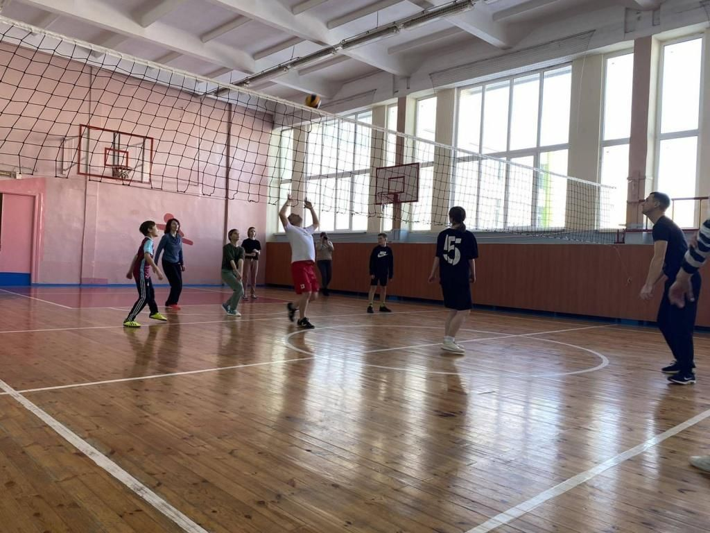

Образование, которое меняет будущее
Средняя школа №5 города Сморгони — это место, где создаются условия для всестороннего развития учащихся. Мы гордимся нашими педагогами и успехами учеников. Здесь каждый день воплощаются идеи, которые помогают развивать личности и готовят их к будущей жизни.
Предлагаем широкий спектр образовательных программ, от базового образования до углубленного изучения предметов. У нас каждый ученик может найти свою нишу и реализовать творческий потенциал.
У нас качественное образование по всем основным предметам. Мы активно участвуем в олимпиадах, конкурсах и научных проектах, чтобы развивать у учащихся не только знания, но и умение мыслить критически.
Предлагаем курсы по углубленному изучению иностранных языков, математики и информатики. Наши программы ориентированы на современные требования образования.
В школе есть секции по футболу, баскетболу, волейболу и другим видам спорта. Спортивные кружки способствуют развитию физической формы и командного духа.
1 сентября 2025 года состоится торжественная линейка, посвященная началу учебного года. Ожидаем встречи с педагогами и яркие мероприятия для учеников и их родителей.
Дата: 30 августа 2025В этом году пройдет олимпиада по математике среди учеников 7-11 классов. Победители смогут участвовать в более крупных конкурсах.
Дата: 15 сентября 202522 октября 2025 года мы проводим культурный вечер, где ученики продемонстрируют свои творческие способности через пение, танцы и театральные номера.
Дата: 22 октября 2025В ноябре 2025 года пройдет конкурс научных проектов среди старшеклассников. Мы ждем работы по экологии, робототехнике и другим направлениям науки.
Дата: 10 ноября 2025Каждый год проводим конкурсы для развития творческих и интеллектуальных способностей учеников. Конкурсы охватывают разные дисциплины: математика, литература, искусство.
Дата: 15 марта 2025
Школа участвует в городских олимпиадах. Победители получают дипломы и шанс участвовать в областных и республиканских этапах.
Дата: 25 апреля 2025
Мы регулярно проводим концерты и театральные постановки, где ученики могут раскрыть свои таланты и поделиться ими с другими.
Дата: 5 июня 2025
Ежегодно проводим спортивные турниры по футболу, баскетболу и волейболу. Это отличная возможность для учеников развить командный дух и поддерживать физическую форму.
Дата: 10 сентября 2025